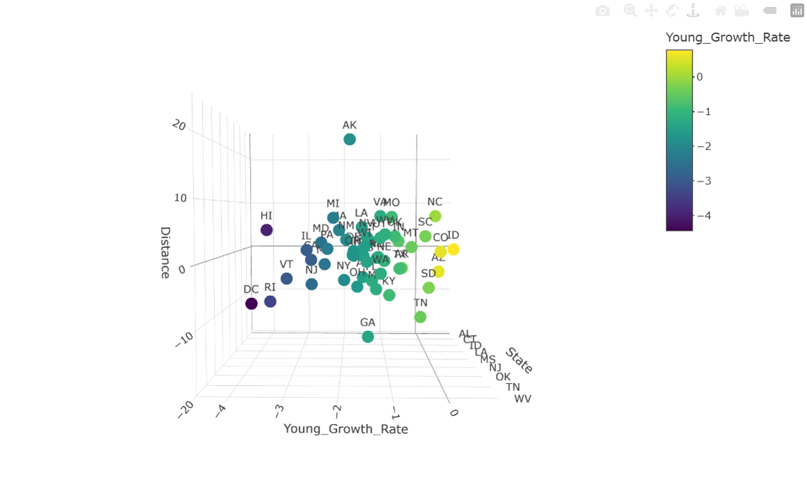

Population Distribution by Age and Distance from Midline
This 3D visualization displays U.S. states positioned according to their distance from the country's geographic midline, serving as a proxy for their relative northern or southern location. States are color-coded to highlight growth rate differences where yellow and purple markers indicate positive and negative growth rates, respectively.
See code source
Home Interactive 3D Graph Back to Studies